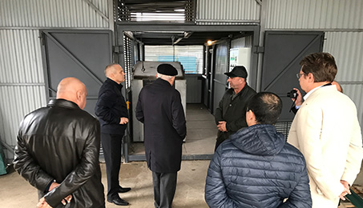
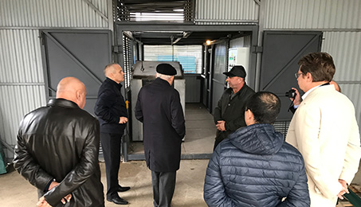

8 (800) 707-71-24


مجمع متنقل لإتلاف النفايات المحتوية على الكربون
مع إمكانية تحويلها إلى الطاقة الكهربائية أو الحرارية
اكتشف خلال دقيقتين كيف يبدو التركيب ويعمل ، ونقدر أيضًا جميع مميزاته الرئيسية!
املأ طلبًا للحصول على عرض تجاري:
صصُمم المجمع المتنقل لإتلاف الأنواع التالية من النفايات:

النفايات المنزلية (البلاستيك، مواد التغليف والتعبئة، الملابس وغيرها)؛

النفايات الطبية (الضمادات، الحقن، القطرات، المخلفات المختبرية، الأدوية منتهية الصلاحية وغيرها)؛

النفايات البيولوجية العضوية مختلطة مع النفايات المحتوية على الكربون (50/50)؛
نفايات صناعية مختلفة؛
ما هو مبدأ التخلص من النفايات؟
يقوم مبدأ عمل المجمع على تقنية التحويل الحراري الكيميائي:
التحويل الكيميائي الحراري هو سلسلة تفاعل كيميائي حراري لتحلل وتحويل المواد المحتوية على الكربون (النفايات) إلى غاز تخليقي، مع إطلاق كمية كبيرة من الطاقة الحرارية (عند تركيب وحدة إضافية إلى وحدة "أوتيليزاتور"، يمكن تحويل الطاقة الحرارية إلى الطاقة الكهربائية).
وحدة Utilizator ، موديل D-500
ما هي عملية إعادة التدوير؟
"يتم تسخين مفاعل المجمع المتنقل (انظر الرسم البياني) من خلال وضع وحرق فحم نباتي داخله حيث تصل درجة الحرارة فيه إلى 400 درجة مئوية في حوالي 30 دقيقة، ما يكفي لبدء تفاعل سلسلة التحويل الحراري الكيميائي. ثم يتم تحميل نفايات محتوية على الكربون في المفاعل محدود دخول الأكسجين، ونتيجة لعملية التحلل الكيميائي الحراري يتم تحويل النفايات إلى غاز صناعي عالي السعرات الحرارية الذي يدخل إلى غرفة الدوامة (انظر الرسم البياني) ويُستخدم لتوليد الطاقة الحرارية وتتراوح درجة حرارة التشغيل في المفاعل من 1100 درجة مئوية إلى 2000 درجة مئوية، ولا تتجاوز درجة حرارة قصوى للغازات التي تخرج من نظام العادم (انظر الرسم البياني) عن 265 درجة مئوية، ومن الممكن استخدام الرماد التناتج عن العملية للأغراض التجارية (في البناء، البتروكيماويات).
يتلخص الفرق الرئيسي بين طريقة التحويل الحراري الكيميائي والحرق في انعدام الأكسجين، لذلك لا توجد شروط لتشكل مركبات سامة (الديوكسينات والفيوران وما إلى ذلك)، في حين أن مستوى الانبعاثات في الغلاف الجوي أقل منه في مراجل عاملة بالغاز. وبالتالي، فإن هذه التكنولوجيا للتخلص من النفايات هي أكثر ملاءمةً وصداقة للبيئة.
وحدة Utilizator متاحة للشراء في التهيئات التالية:
د-500
إنتاجية المجمع: لا يزيد عن 2000 كلغ أو 15 متر مكعب في


المقاس: طول 6000 مم، عرض 2400 ملم، ارتفاع 2400 ممم؛
وزن المجمع: 5420 كلغ؛
الفولطية الإسمية: 380 فولط +/- 10 في المائة؛
التردد: 50 – 60 هرتزا +/- 2 في المائة؛
الحد الأقصى لاستهلاك الطاقة الكهربائية الكلي: 550 واط؛
وقت التشغيل: 24 ساعة؛
الوقت اللازم لبلوغ الطاقة التشغيلية: 45 دقيقة؛
مدة العمل المتواصل: 150 ساعة؛
يوم؛
نسبة إتلاف النفايات: حتى 99.9 في المائة، اعتمادا على احتواء النفايات على عناصر لا تخضع للتحويل الحراري الكيميائي (الزجاج والسيراميك والمعادن وغيرها)؛
عدد العمال: عامل واحد / نوبة.
القدرة المركبة: 6 كيلو واط؛
ذروة درجات الحرارة الفورية للتحويل الحراري الكيميائي: 2000 درجة مئوية.
د-1000
إنتاجية المجمع: لا يزيد عن 3500كلغ أو 30 متر مكعب في

المقاس: طول 6000 مم، عرض 2400 ملم، ارتفاع 2400 ممم؛
وزن المجمع: 6220 كلغ؛
الفولطية الإسمية: 380 فولط +/- 10 في المائة؛
التردد: 50 – 60 هرتزا +/- 2 في المائة؛
الحد الأقصى لاستهلاك الطاقة الكهربائية الكلي: 720 واط؛
وقت التشغيل: 24 ساعة؛
الوقت اللازم لبلوغ الطاقة التشغيلية: 45 دقيقة؛
مدة العمل المتواصل: 150 ساعة؛
يوم؛
نسبة إتلاف النفايات: حتى 99.9 في المائة، اعتمادا على احتواء النفايات على عناصر لا تخضع للتحويل الحراري الكيميائي (الزجاج والسيراميك والمعادن وغيرها)؛
عدد العمال: عامل واحد / نوبة.
القدرة المركبة: 8 كيلو واط؛
ذروة درجات الحرارة الفورية للتحويل الحراري الكيميائي: 2000 درجة مئوية.
د-2000
إنتاجية المجمع: لا يزيد عن 6000 كلغ أو 50 متر مكعب في


{kind=link}
{kind=link}
{kind=link}
المقاس: طول 4800 مم، عرض 6000 ملم، ارتفاع 5800 مم؛
وزن المجمع: 22000 كلغ؛
الفولطية الإسمية: 380 فولط +/- 10 في المائة؛
التردد: 50 – 60 هرتزا +/- 2 في المائة؛
الحد الأقصى لاستهلاك الطاقة الكهربائية الكلي: 1350 واط؛
وقت التشغيل: 24 ساعة؛
الوقت اللازم لبلوغ الطاقة التشغيلية: 45 دقيقة؛
مدة العمل المتواصل: 150 ساعة؛
يوم؛
نسبة إتلاف النفايات: حتى 99.9 في المائة، اعتمادا على احتواء النفايات على عناصر لا تخضع للتحويل الحراري الكيميائي (الزجاج والسيراميك والمعادن وغيرها)؛
عدد العمال: عاملان / نوبة.
القدرة المركبة: 10 كيلو واط؛
ذروة درجات الحرارة الفورية للتحويل الحراري الكيميائي: 2000 درجة مئوية.
مازايا المجمع المتنقل (وحدة "أوتيليزاتور"):

لا ينتمي إلى فئة معدات "حرق النفايات" من الناحية التكنولوجية والقانونية؛
يعتبر بديلا للمحارق؛
ينتمي إلى فئة المعدات الكيميائية، وبالتالي لا يتم إتلاف النفايات (حرقها)، ولكن تحويلها إلى الطاقة الحرارية أو الكهربائية؛
من الممكن الاستخدام التجاري لبقايا الرماد (في البناء، البتروكيماويات)؛
تتم عملية التخلص من النفايات بدون إمدادات وقود إضافية (الغاز والفحم والديزل وما إلى ذلك)؛
تضمن تكنولوجيا التحويل الحراري الكيميائي التخلص الآمن بيئياً من مجموعة واسعة من النفايات، بما في ذلك النفايات الطبية والنفايات الخطرة الأخرى؛
ﻣﺴﺘﻮى اﻻﻧﺒﻌﺎﺛﺎت اﻟﻬﻮاﺋﻴﺔ أﻗﻞ مما ﻣﻦ مراجل عاملة بالغاز؛
تتطلب العملية التكنولوجية للتخلص من النفايات الحد الأدنى من تكاليف التشغيل؛
توفير خفض في حجم النفايات القابلة لإعادة التدوير إلى 99.9 في المائة، اعتمادا على احتواء النفايات على عناصر لا تخضع للتحويل الحراري الكيميائي (الزجاج والسيراميك والمعادن وغيرها)؛
فترة الضمان 12 شهرا. عمر الخدمة للمجمع المتنقل (وحدة "أوتيليزاتور") - حتى 10 سنوات؛
وفقا للمهمة التقنية للعميل، يمكن تصنيع المجمع المتنقل في الإصدارات المعيارية التالية:
مجمع متنقل لإتلاف النفايات (وحدة "أوتيليزاتور"، تتبدد الطاقة الحرارية في الهواء)؛

1
المجمع المتنقل الحراري (وحدة "أوتيليزاتور" + وحدة لنقل الطاقة الحرارية بسعة تتراوح من 0.1 إلى 1 ميجاواط)؛

2
المجمع المتنقل الكهربائي (وحدة "أوتيليزاتور" + وحدة لتوليد الكهرباء بسعة من 100 إلى 300 كيلوواط).

3
قم بالتسجيل للحصول على عرض توضيحي كامل للتثبيت
املأ طلبًا للاتصال بمدير الشركة
 

يتم تقديم منشأة متنقلة (وحدة الاستخدام) في موقع مظاهرة في بلدة جوكوفسكي (منطقة موسكو)
ندعوك للتعرف على نفسك وعرض أعمال التثبيت في أيام الأسبوع.
8 (800) 707-71-24
123100 ، موسكو ،
جسر بريسنينسكايا ، 12 ،
الطابق 45 ، مكتب 82